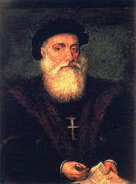
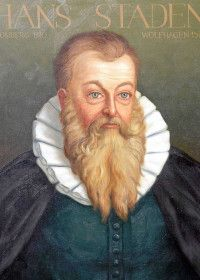
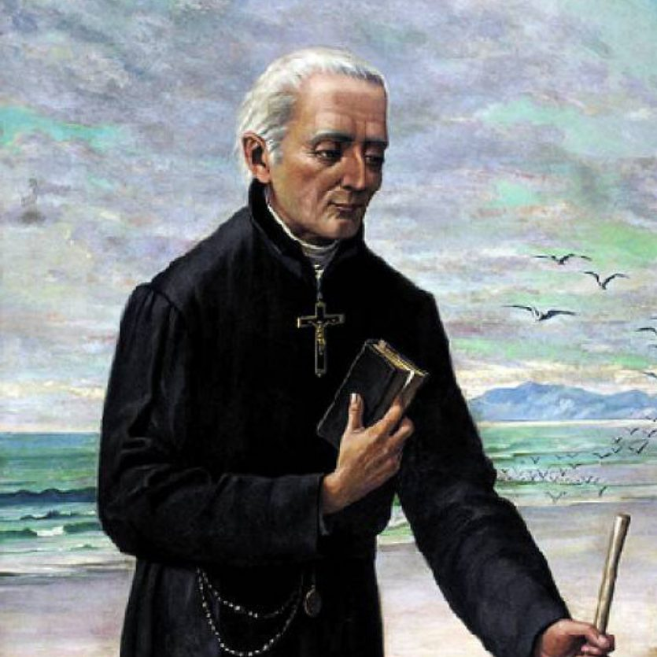
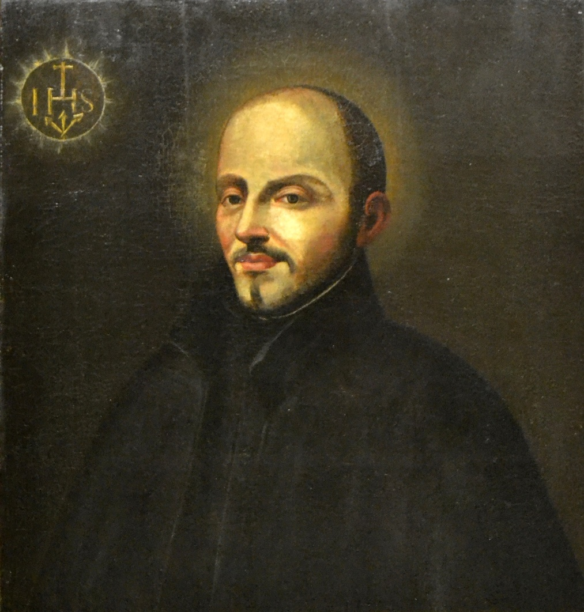

O Quinhentismo representa a primeira manifestação literária no Brasil que também ficou conhecida como "literatura de informação". É um período literário que reúne relatos de viagem com características informativas e descritivas. São textos que descrevem as terras descobertas pelos portugueses no século XVI, desde a fauna, a flora e o povo. Vale lembrar que o Quinhentismo brasileiro ocorreu paralelo ao Classicismo português.
O contexto histórico do Quinhentismo é o início da colonização brasileira. As duas forças políticas que atuaram na dominação do território e dos nativos, o Estado português e a Igreja Católica, são perceptíveis a partir das produções literárias do período.
Era filho de Vasco Fernandes de Caminha, cavaleiro do duque de Bragança, e Isabel Afonso, casal esse que teve, além de Pero, pelo menos outros dois filhos, Fernando e Afonso Vaz. Não se sabe ao certo quando nasceu Caminha, mas supõe-se que seria em 1450 e na cidade de Porto, onde teria sido criado e viveria pela maior parte de sua vida. Seus ancestrais seriam os antigos povoadores de Neiva à época do reinado de D. Fernando (1367-1383). Letrado, Pero Vaz foi cavaleiro das casas de D. Afonso V (1438-1481), de D. João II (1481-1495) e de D. Manuel I (1495-1521). Pai e filho, para melhor desempenhar seus cargos, precisavam exercitar a prática e desenvolver o conhecimento da escrita, distinguindo-se a serviço dos monarcas.
Hans Staden foi um aventureiro mercenário alemão do século XVI. Por duas vezes, Staden esteve no Brasil, onde participou de combates nas capitanias de Pernambuco e de São Vicente. De volta à Alemanha, Staden escreveu "História verdadeira e descrição..." um relato de suas viagens ao Brasil que se tornou um grande sucesso da época.
José de Anchieta foi um padre jesuíta espanhol que ingressou na Companhia de Jesus no Reino de Portugal, ficando ao seu serviço, e um dos fundadores das cidades brasileiras de São Paulo e do Rio de Janeiro.
Manuel da Nóbrega foi um sacerdote jesuíta português, chefe da primeira missão jesuítica à América. As cartas enviadas a seus superiores são documentos históricos sobre o Brasil colonial e a ação jesuítica no século XVI. Teve um papel fundamental na fundação de três das maiores cidades do Brasil: Salvador, São Paulo e Rio de Janeiro.
A “Carta de Pero Vaz de Caminha” ou “Carta a el-Rei Dom Manoel sobre o achamento do Brasil” foi um documento escrito pelo escrivão português Pero Vaz de Caminha. Redigido no dia 1 de maio de 1500, em Porto Seguro, Bahia, a carta descreve como foi a chegada dos portugueses no Brasil. foi levado para Lisboa sob os cuidados de Gaspar de Lemos, considerado um dos maiores navegadores de seu tempo.
Clique aqui para ver a carta
A Carta do Mestre João é o documento escrito pelo espanhol João Faras ou João Emeneslau, entre 28 de abril e 1 de maio de 1500, durante a viagem de Cabral ao Brasil, em um misto de espanhol e português quinhentista, dando ciência ao rei de Portugal D. Manuel I acerca do "descobrimento". A carta é famosa por fazer uma das primeiras descrições identificando a constelação Cruzeiro do Sul. Nela o autor revela a existência de um antigo mapa-múndi pertencente a Pero Vaz Bisagudo, em que já constaria o sítio desta terra.
Clique aqui para verdadeiraa carta
Duas Viagens ao Brasil é uma obra publicada pelo soldado germânico Hans Staden em 1557, descrevendo suas duas viagens ao novo mundo. O livro é mais conhecido pelas descrições do autor sobre suas experiências enquanto mantido em cativeiro pelos Tupinambá perto de Bertioga, Brasil. Duas Viagens ao Brasil tornou-se uma das narrativas do gênero mais vendidas do século XVI.
Clique aqui para ver a capa